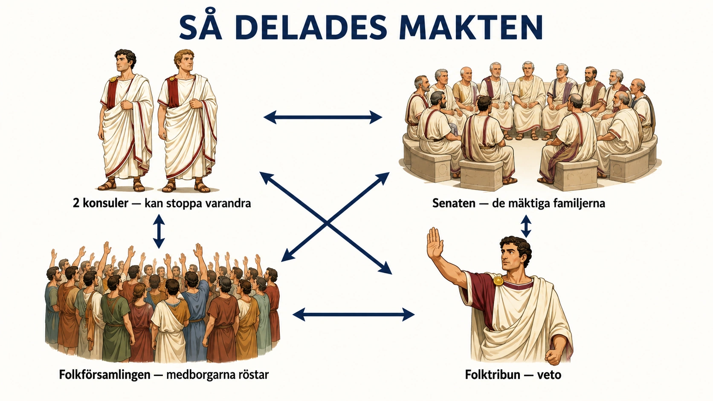
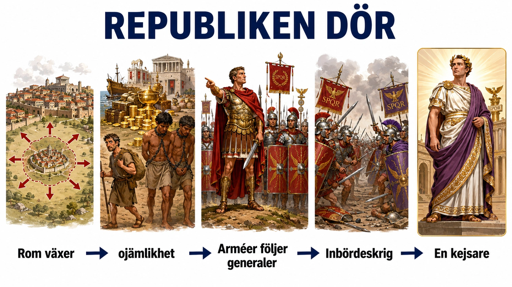
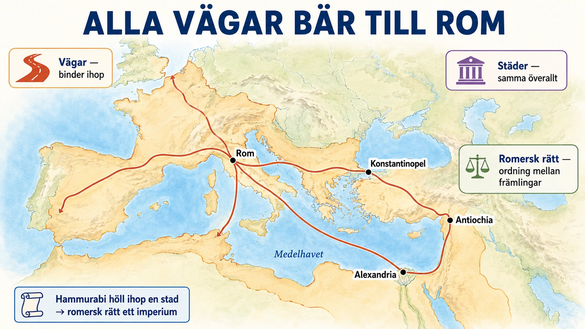
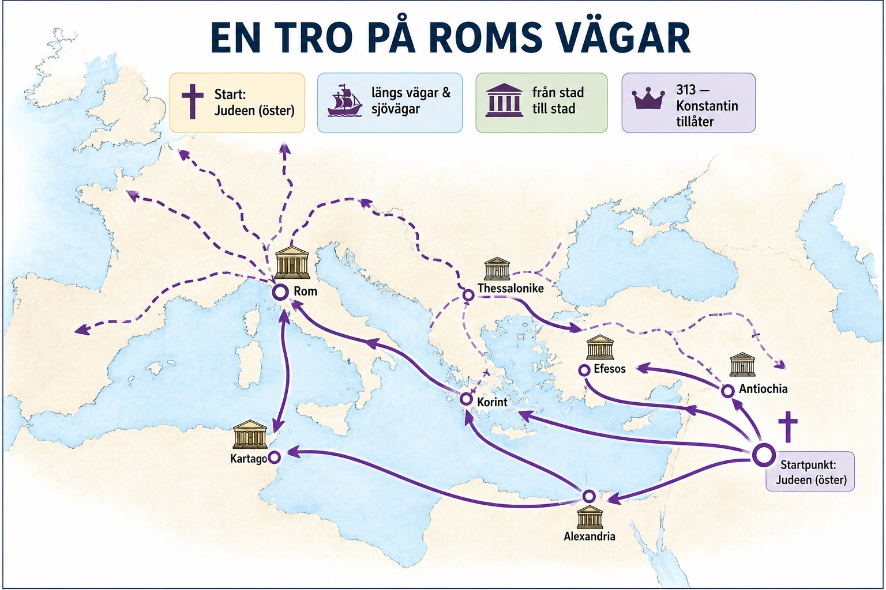
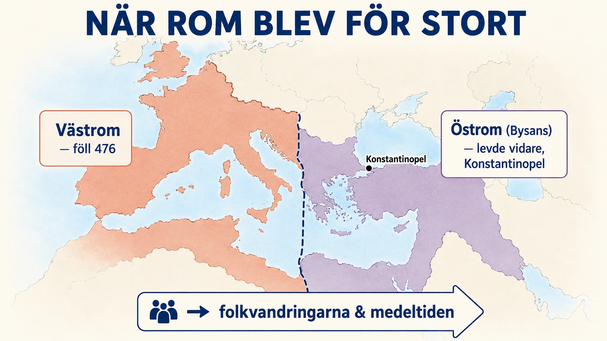

— problemet med att hålla ihop något som blivit för stort —
Rom började inte som ett stort imperium. Från början var Rom en stad vid floden Tibern i Italien. Floden gav vatten, handel och kontakt med andra. Men Italien såg inte ut som Egypten. Där kunde stora floder samla människor i långa riken. Italien hade i stället berg, kullar och många olika folk. Bergen splittrade landskapet, medan floder och vägar band ihop det.
Enligt sägnen styrdes Rom först av kungar. Men omkring år 509 f.Kr. kastade romarna ut sin siste kung. De ville inte längre att en enda person skulle ha all makt. I stället skapade de en republik. Ordet betyder ungefär "det som tillhör folket". Men det var inte demokrati som i Aten. Kvinnor, slavar och människor utan medborgarskap fick inte vara med och bestämma. Ändå var republiken ett viktigt steg, för romarna försökte dela upp makten så att ingen ensam kunde bli kung igen.
Högst makt hade två konsuler. De valdes för ett år i taget och ledde staten och armén. Att de var två var viktigt: om den ene försökte ta för mycket makt kunde den andre stoppa honom. Och tiden var kort — ingen skulle kunna sitta kvar för länge och bli för mäktig.
En annan viktig del var senaten. Den bestod av rika och mäktiga män från de ledande familjerna. Senaten hade stort inflytande över ekonomi, krig och fred. Rom var alltså ingen jämlik demokrati — mäktiga familjer styrde mycket. Men makten var ändå uppdelad mellan flera.
Det fanns också folkförsamlingar där romerska medborgare kunde rösta om lagar och välja vissa ämbetsmän. Med tiden fick de vanliga fria medborgarna, plebejerna, mer att säga till om. De kunde välja folktribuner som skulle skydda dem mot de mäktiga familjerna, patricierna. En folktribun kunde säga nej till vissa beslut — det kallades veto. På så sätt byggde romarna in spärrar i sitt styre.
Titta på bilden innan du läser vidare — se hur makten är uppdelad:

Att vara romersk medborgare betydde både rättigheter och plikter. En medborgare kunde få rösta, äga egendom och få sin sak prövad i domstol. Men han förväntades också försvara Rom, betala skatt och sätta staten först. Medborgarskapet blev ett slags avtal mellan människan och staten.
Republiken var alltså ett försök att lösa en stor fråga: hur kan ett samhälle styras utan att makten samlas hos en enda person? Romarnas svar var att dela makten mellan konsuler, senat, folkförsamlingar och lagar. Det fungerade länge — särskilt så länge Rom var en stark stad som växte långsamt. Men samma system blev senare ett problem. Republiken var byggd för en stad, inte för ett världsrike. Och det leder vidare till nästa del: varför republiken dog och kejsardömet föddes.
Rom började inte som ett stort imperium. Från början var Rom en stad vid floden Tibern i Italien. Floden gjorde platsen viktig. Den gav vatten, handel och kontakt med andra områden. Men Italien såg inte ut som Egypten eller Mesopotamien. Där kunde stora floder samla människor i långa, sammanhängande riken. Italien hade berg, kullar och olika folkgrupper. Bergen splittrade landskapet, medan floder och vägar band ihop det. Det är en viktig tanke: geografin både hjälpte och hindrade Rom.
Enligt romersk tradition styrdes Rom först av kungar. Men omkring år 509 f.Kr. kastade romarna ut sin siste kung. De ville inte längre att en enda person skulle ha all makt. I stället skapade de en republik. Ordet republik betyder ungefär "det gemensamma ärendet" eller "det som tillhör folket". Men det var inte demokrati på samma sätt som i Aten. Alla fick inte vara med och bestämma. Kvinnor, slavar och människor utan medborgarskap hade ingen politisk makt. Ändå var republiken ett viktigt steg i historien, eftersom romarna försökte dela upp makten så att ingen ensam kunde bli kung igen.
Den högsta makten låg hos två konsuler. De valdes för ett år i taget och ledde staten och armén. Att det fanns två konsuler var viktigt. Om den ena försökte ta för mycket makt kunde den andra stoppa honom. Tiden var också begränsad. En konsul skulle inte kunna sitta kvar hur länge som helst och bygga upp en personlig maktställning.
En annan viktig del var senaten. Senaten bestod framför allt av rika och mäktiga män från de ledande familjerna. Den beslutade inte allt formellt, men hade stort inflytande över ekonomi, krig, fred och politik. Därför var Rom ingen jämlik demokrati. Det var snarare ett samhälle där mäktiga familjer styrde mycket, men där makten ändå var uppdelad mellan flera institutioner.
Det fanns också folkförsamlingar där romerska medborgare kunde rösta om lagar och välja vissa ämbetsmän. Med tiden fick vanliga fria medborgare, plebejerna, mer inflytande. De kunde välja folktribuner, som skulle skydda dem mot övergrepp från de mäktiga patricierna. Folktribunerna kunde säga nej till vissa beslut. Det kallades veto. På så sätt byggde romarna in spärrar i sitt styre.
Att vara romersk medborgare betydde både rättigheter och plikter. En medborgare kunde ha rätt att rösta, äga egendom, gifta sig enligt romersk lag och få sin sak prövad i domstol. Men medborgaren förväntades också försvara Rom, betala skatt och sätta staten före sig själv. Medborgarskapet blev ett slags kontrakt mellan individen och staten.
Republiken var alltså ett försök att lösa ett stort politiskt problem: Hur kan ett samhälle styras utan att makten samlas hos en enda person? Romarnas svar blev att dela makten mellan konsuler, senat, folkförsamlingar och lagar. Det fungerade länge, särskilt när Rom fortfarande var en stark stadsstat som långsamt växte.
Men samma styrka blev senare ett problem. Republiken skapades för en stad, inte för ett världsrike. När Rom erövrade större områden spreds romersk kultur, lag och makt över Medelhavet. Grekland hade lämnat vidare idéer om politik, filosofi och medborgarskap. Rom tog emot mycket av detta och byggde vidare. Men ju större Rom blev, desto svårare blev republiken att styra. Den frågan leder vidare till nästa del: varför republiken dog och kejsardömet föddes.
Standardtexten berättar en tilltalande historia: romarna kastade ut kungen, delade makten mellan konsuler, senat och folk, och byggde in spärrar så att ingen kunde bli envåldshärskare. Ordet republik klingar nästan modernt — folkstyre, maktdelning, medborgare med rättigheter. Men om man tittar närmare på hur den romerska republiken faktiskt fungerade, upptäcker man att den var långt mindre jämlik, och långt mer stridslysten inuti, än ordet antyder. Precis som med Atens "demokrati" är det värt att fråga: styre för vem?
Makten låg hos några få familjer. På pappret röstade folket och valde sina ämbetsmän. I praktiken kom nästan alla konsuler och senatorer från en liten grupp mycket rika familjer — patricierna, och senare en blandad överklass av gamla och nya rika. Ämbetena var oavlönade, så bara den som redan var förmögen hade råd att ägna år åt politik i stället för arbete. Valen gick dessutom till på sätt som gynnade de rika: i vissa folkförsamlingar räknades rösterna gruppvis, och de förmögnas grupper röstade först och vägde tyngst. En fattig medborgares röst fanns — men den var värd mindre än en rik mans. Republiken var alltså inte ett folkstyre, utan ett styre av ett fåtal förnäma familjer, med ett mått av folkligt inflytande inbyggt för att hålla missnöjet nere.
Och den var inte fredlig inuti. Vi tänker oss gärna maktdelningen som ett elegant, stabilt maskineri. Men den växte fram ur en lång, hård konflikt mellan de två grupperna: patricierna, den gamla adeln, och plebejerna, de vanliga fria romarna. I århundraden kämpade plebejerna för rättigheter — och deras starkaste vapen var att helt enkelt vägra. Vid flera tillfällen lämnade de staden i massor, en sorts strejk, och Rom stod utan soldater och arbetare tills de fick igenom sina krav. Folktribunerna och vetorätten som standardtexten nämner var inte gåvor uppifrån; de var eftergifter som plebejerna tvingade fram genom att hota med att lämna. Maktdelningen var med andra ord inte en färdig ritning någon tänkt ut, utan resultatet av en lång dragkamp där olika grupper bit för bit förhandlade sig till inflytande.
Spärrarna kunde också låsa sig. Att två konsuler kunde stoppa varandra, och att en tribun kunde lägga in veto, byggde in trygghet mot envälde — men samma spärrar kunde göra staten handlingsförlamad. Om de två konsulerna var oense, eller om en tribun blockerade allt, kunde beslut fastna helt. Så länge Rom var litet och hoten hanterbara gick det bra. Men när riket växte och kriserna blev större, blev det just den här långsamheten och de låsta konflikterna som fick starka enskilda män att framstå som en lösning — någon som kunde få saker gjorda när systemet stod stilla. Där ligger fröet till republikens undergång, som är nästa dels ämne.
Så var landar vi? Den romerska republiken var ett genuint viktigt experiment — idén att makt ska delas, tidsbegränsas och kontrolleras av lagar har påverkat statsbyggen ända in i vår tid. Men vi ska inte läsa in vår egen tids ideal i den. Den var ett styre av rika familjer, framvuxet ur klasskamp, med folkligt inflytande som en hårt tillkämpad eftergift snarare än en självklar rättighet. Att se båda sakerna samtidigt — det verkligt nyskapande och det djupt ojämlika — är precis den sortens dubbla blick en historiker övar upp. Och det förbereder oss för nästa fråga: om republiken var så skickligt byggd mot envälde, hur kunde den ändå sluta med en kejsare?
Titta på bilden innan du läser vidare — följ kedjan från vänster till höger:

Republiken hade gjort Rom starkt. Genom att dela makten mellan konsuler, senat och folkförsamlingar slapp romarna en kung. Men republiken var byggd för en stad och området runt omkring. När Rom växte till ett enormt rike runt Medelhavet började systemet knaka. Det som en gång var en styrka blev till slut för svagt för att hålla ihop allt.
En viktig orsak var rikedomen från erövringarna. När Rom besegrade andra folk kom pengar, jord och slavar till Italien. De rika kunde köpa stora jordegendomar och låta slavar göra arbetet. Många småbönder kunde inte konkurrera och förlorade sin jord. Och det var just dessa småbönder som ofta hade varit ryggraden i den romerska armén.
Därför förändrades också armén. Förr hade soldaterna kämpat för republiken. Nu blev de mer beroende av sina generaler, som kunde lova dem lön, byte och jord. Då blev soldaternas lojalitet ibland starkare till generalen än till staten. Det var farligt: en general med en trogen armé kunde hota Rom självt.
Det ledde till inbördeskrig. Romarna började kriga mot varandra om makten. Starka ledare som Sulla, Pompejus och Julius Caesar visade att en general med lojala soldater kunde bli mäktigare än republikens regler. Caesar blev mycket populär och tog till slut makten på livstid. Många såg honom som en ny kung. År 44 f.Kr. mördades han av män som sa att de försvarade republiken. Men mordet räddade den inte — i stället kom nya krig.
Ur kaoset steg Octavianus fram, Caesars adoptivson. Han blev till slut ensam härskare, och år 27 f.Kr. fick han namnet Augustus. Han brukar räknas som Roms förste kejsare. Men Augustus var försiktig. Han kallade sig inte kung. Han lät senaten och de gamla ämbetena finnas kvar, så att det utåt såg ut som att republiken levde vidare. I verkligheten låg den viktigaste makten hos honom.
Så föddes kejsardömet — inte för att romarna plötsligt glömde republiken, utan för att republiken inte längre klarade att styra ett så stort och oroligt rike. Orsakskedjan är det viktiga: Rom växte, ojämlikheten ökade, arméerna blev lojala mot generaler, inbördeskrig bröt ut, och ur kaoset accepterade många en stark ensam ledare. Kejsardömet gav mer ordning i riket — men priset var högt: makten samlades åter hos en person, precis det som republiken en gång skapats för att förhindra.
Republiken hade gjort Rom starkt. Genom att dela makten mellan konsuler, senat, folkförsamlingar och lagar kunde romarna undvika att en kung tog över. Men republiken var byggd för en stad och dess närmaste område. När Rom växte till ett enormt rike runt Medelhavet började systemet knaka. Det som en gång hade varit en styrka blev till slut för svagt för att hålla ihop allt.
Geografin hjälpte Rom att växa. Italien låg mitt i Medelhavet. Floden Tibern gav Rom kontakt med havet, och Medelhavet blev som en stor väg mellan olika folk. Rom kunde sprida soldater, varor, lagar och idéer över stora avstånd. Samtidigt fanns berg, öknar, hav och långa gränser som gjorde riket svårt att styra. Precis som floder kunde samla människor, kunde berg och avstånd splittra dem. När Rom blev större blev problemet tydligare: hur styr man människor som bor långt från huvudstaden och som har olika språk, traditioner och intressen?
En viktig orsak till krisen var rikedomarna från erövringarna. När Rom besegrade andra folk kom pengar, jord och slavar till Italien. De rika kunde köpa stora jordegendomar och använda slavar som arbetskraft. Många småbönder fick svårt att konkurrera och förlorade sin jord. Samtidigt hade dessa småbönder ofta varit grunden för den romerska armén. När de blev fattiga och jordlösa förändrades samhället.
Armén förändrades också. Tidigare hade soldaterna ofta varit medborgare som kämpade för republiken. Men med tiden blev många soldater mer beroende av sina generaler. Generalerna kunde lova lön, byte och jord efter krigen. Då blev soldaternas lojalitet ibland starkare till generalen än till staten. Det var farligt. Om en general hade en stark armé kunde han använda den för att hota Rom självt.
Det ledde till inbördeskrig. Romarna började kriga mot varandra om makten. Starka ledare som Sulla, Pompejus och Julius Caesar visade att en general med lojala soldater kunde bli mäktigare än republikens regler. Julius Caesar blev särskilt farlig för senaten. Han hade stora militära framgångar och blev mycket populär. När han tog makten på livstid såg många honom som en ny kung. År 44 f.Kr. mördades han av män som påstod att de försvarade republiken. Men mordet räddade inte republiken. I stället kom nya krig.
Ur kaoset steg Octavianus fram. Han var Caesars adoptivson och blev till slut ensam härskare. År 27 f.Kr. fick han namnet Augustus. Han brukar räknas som Roms förste kejsare. Men Augustus var försiktig. Han kallade sig inte kung. Han lät många gamla republikanska institutioner finnas kvar, som senaten och ämbetena. Utåt såg det ut som att republiken levde vidare. I verkligheten låg den viktigaste makten hos kejsaren.
Det var därför kejsardömet föddes: inte för att romarna plötsligt glömde republiken, utan för att republiken inte längre klarade av att styra ett så stort och oroligt rike. Orsakskedjan är viktig: Rom växte, rikedom och ojämlikhet ökade, arméerna blev lojala mot generaler, inbördeskrig bröt ut, och ur kaoset accepterade många en stark ensam ledare.
Kejsardömet blev alltså svaret på republikens kris. Det innebar mindre politisk frihet för de mäktiga i Rom, men också mer ordning i riket. Rom kunde fortsätta sprida vägar, städer, lagar, latin och romersk kultur. Men priset var högt: makten samlades åter hos en person, det som republiken från början hade försökt förhindra. Nästa fråga blir därför hur kejsarna lyckades hålla ihop ett imperium med miljoner människor som aldrig hade träffat varandra.
Standardtexten avslutar med något lätt underligt: Augustus blev ensam härskare, men han kallade sig inte kung, och han lät senaten och de gamla ämbetena finnas kvar. Utåt levde republiken vidare; i verkligheten hade en man all makt. Det är värt att stanna vid, för det är ett av historiens skickligaste politiska trick — och det säger något viktigt om hur makt fungerar. Augustus avskaffade aldrig republiken. Han tömde den på innehåll och behöll skalet.
Den främste bland jämlikar. Augustus tog aldrig titeln kung — rex var det mest hatade ordet i romersk politik, hela poängen med republiken hade varit att slippa en sådan. I stället kallade han sig princeps, ungefär "den främste medborgaren", som om han bara var en romare bland andra, fast lite mer ansedd. Han lät senaten sammanträda, lät konsuler väljas, lät folkförsamlingar mötas. På ytan gick den gamla maskinen. Men Augustus höll i det som verkligen avgjorde: han befälde de flesta legionerna, kontrollerade statskassan och de viktigaste provinserna, och hade rätt att lägga in veto. Senatorerna fick behålla sina fina titlar och sin värdighet — men de visste vem som egentligen bestämde. Formerna var republikens; makten var enväldets.
Varför bry sig om skenet? Man kan undra varför Augustus inte bara tog kronan öppet. Svaret är klokt: han hade sett vad som hände med den som var för öppen med sin makt. Hans egen adoptivfar, Julius Caesar, hade tagit makten synligt och på livstid — och blev mördad för det, mitt i senaten, av män som ansåg sig rädda republiken. Augustus lärde sig läxan. Genom att låtsas att ingenting egentligen förändrats, att han bara "återställt ordningen", gav han romarna en berättelse de kunde acceptera. Ingen behövde erkänna att friheten var borta, eftersom alla de gamla orden och ceremonierna fanns kvar. Skenet var inte en lögn för lögnens skull — det var det som gjorde enväldet möjligt att leva med.
Så när dog egentligen republiken? Det är svårare att svara på än det låter, och det är just det som gör frågan intressant. Fanns det en dag då republiken tog slut? Inte riktigt. Det fanns ingen kupp, ingen förklaring, inget ögonblick då någon sa "nu är republiken över". Makten gled över, steg för steg, bakom bekanta former, tills folk en dag insåg att den för länge sedan var borta. Historiker diskuterar än i dag när gränsen egentligen passerades. Och det pekar på något oroande allmängiltigt: ett fritt styre behöver inte krossas med våld för att försvinna. Det kan också urholkas inifrån, medan alla institutioner till synes står kvar och fungerar. Fasaden kan se ut precis som förr långt efter att innehållet tömts ut.
Blev det bättre eller sämre? Här ska man vara ärlig åt båda hållen. För de rika familjerna i Rom, som förlorat sin verkliga makt, var kejsardömet en förlust — friheten att tävla om de högsta ämbetena var borta. Men för miljoner människor ute i provinserna innebar Augustus fred efter årtionden av inbördeskrig, säkrare vägar, fungerande förvaltning och ett slut på blodbaden. Många hade det bättre under en kejsare än under en republik som slitit sönder sig själv i strider mellan generaler. Det är den obekväma sanningen: envälde är inte alltid det som folk upplever som värst, och frihet för ett fåtal är inte alltid detsamma som ett gott liv för de många. Att hålla båda dessa tankar samtidigt — att något gick förlorat och att något vanns — är precis den sortens omdöme historien tränar.
Och med den freden kommer nästa fråga. Augustus och hans efterföljare lyckades, mot alla odds, hålla ihop ett imperium som sträckte sig över tre kontinenter och miljoner främlingar. Hur? Inte främst med svärd, visar det sig, utan med vägar, städer och lag. Det är nästa dels ämne.
Titta på bilden innan du läser vidare — se vad som håller ihop imperiet:

När Augustus blev kejsare började en lång period av lugn i Romarriket. Den kallas Pax Romana, den romerska freden. Det betyder inte att allt var fredligt — det fanns fortfarande krig vid gränserna och uppror. Men jämfört med inbördeskrigens tid blev riket mycket stabilare. I ungefär två hundra år kunde handel, städer, vägar och lagar växa på ett sätt som förändrade hela Medelhavsområdet.
Riket var enormt och rymde många folk och språk. Romarnas stora styrka var att de band ihop denna splittrade värld. De gjorde det med vägar, städer och lag.
Vägarna var ett av Roms viktigaste verktyg. De byggdes först för armén, så att soldater snabbt kunde nå oroliga områden. Men snart användes de också av handelsmän, budbärare och resenärer. "Alla vägar bär till Rom", sägs det — huvudstaden blev mitten i ett stort nätverk. Längs vägarna kunde människor, varor och idéer röra sig snabbare än förr.
Städerna var också viktiga. I en romersk stad fanns torg, badhus, tempel, teatrar och domstolar. Även långt från Rom kunde människor se samma slags byggnader, använda samma mynt och möta samma myndigheter. Staden spred romerskt sätt att leva.
Men vägar och städer räckte inte. Ett imperium behöver också regler. Här blev romersk rätt mycket viktig. Lagarna skapade ordning mellan människor som inte kände varandra. De handlade om egendom, avtal, arv, brott och medborgares rättigheter. Tanken var att konflikter skulle lösas genom lagar och domstolar, inte genom våld.
Här kan vi tänka tillbaka på Hammurabis lagar i Mesopotamien. Hammurabi använde lag för att hålla ihop en stad och ett tidigt rike. Romarna gjorde samma sak — men i mycket större skala. Hammurabis lag höll ihop en stad; romersk rätt höll ihop ett helt imperium. Samma verktyg, uppskalat.
Romersk rätt var inte jämlik som i dag — slavar, kvinnor och fattiga hade inte samma möjligheter som fria män. Men idén att samhället ska styras av lagar, och att medborgare har vissa rättigheter, blev mycket betydelsefull. Mycket av det romerska arvet lever kvar: vägar, broar och akvedukter, latinet som blev grunden för italienska, franska och spanska, och rättstankar som avtal och egendom. Rom gjorde alltså mer än att erövra — Rom spred, organiserade och bevarade. Men samma vägar som höll ihop imperiet kunde också sprida nya idéer. En av de viktigaste var kristendomen — och det leder vidare till nästa del.
När Augustus blev kejsare började en lång period av större stabilitet i Romarriket. Den brukar kallas Pax Romana, den romerska freden. Det betyder inte att allt var fredligt överallt. Det fanns fortfarande krig vid gränserna, uppror och konflikter. Men jämfört med tiden av inbördeskrig blev riket mycket stabilare. Under ungefär två hundra år kunde handel, städer, vägar och lagar utvecklas i en takt som förändrade hela Medelhavsområdet.
Romarriket var enormt. Det sträckte sig över många folk, språk och landskap. Där fanns öknar, berg, floder, hav, stora städer och små byar. Precis som tidigare i historien spelade geografin stor roll. Floder kunde samla människor och göra jordbruk och handel möjligt. Berg kunde skydda, men också splittra. Romarnas stora styrka var att de försökte binda ihop denna splittrade värld. De gjorde det med vägar, städer, arméer, handel och lag.
Vägarna var ett av Roms viktigaste verktyg. De byggdes först för armén. Soldater skulle snabbt kunna röra sig till oroliga områden och försvara gränserna. Men vägarna användes också av handelsmän, ämbetsmän, budbärare och resenärer. Uttrycket "alla vägar bär till Rom" visar hur huvudstaden blev centrum för ett stort nätverk. Vägarna gjorde att människor, varor och idéer kunde röra sig snabbare än tidigare.
Städerna var också viktiga. I romerska städer fanns torg, badhus, tempel, teatrar, domstolar och administrativa byggnader. Staden blev en plats där människor mötte romersk kultur och romerskt sätt att organisera samhället. Även långt från Rom kunde människor se samma typer av byggnader, använda samma mynt och möta samma myndigheter.
Men det räckte inte med vägar och städer. Ett imperium behöver också regler. Här blev romersk rätt mycket viktig. Lagarna skulle skapa ordning mellan människor som inte kände varandra. De reglerade egendom, avtal, arv, brott och medborgares rättigheter. Tanken var att konflikter inte bara skulle lösas med våld eller personlig makt, utan genom regler och domstolar.
Här kan man jämföra med Hammurabis lagar i Mesopotamien. Hammurabi använde lagar för att hålla ihop ett rike kring städer och floder. Romarna gjorde något liknande, men i mycket större skala. Hammurabis lagar höll ihop ett stadssamhälle och ett tidigt rike. Romersk rätt höll ihop ett helt imperium. Det är samma historiska verktyg, men uppskalat: lag som ett sätt att skapa ordning över stora områden.
Romersk rätt var inte jämlik enligt dagens synsätt. Slavar, kvinnor och fattiga hade inte samma möjligheter som fria män med medborgarskap. Men idén att samhället skulle styras av lagar, och att medborgare hade vissa rättigheter, blev mycket betydelsefull. Senare europeiska rättssystem har påverkats starkt av romersk rätt. Begrepp som avtal, egendom, medborgarskap och rättslig prövning har rötter i den romerska traditionen.
Pax Romana gjorde också handel lättare. När havet var säkrare och vägarna fungerade kunde spannmål, vin, olivolja, metall, glas, keramik och lyxvaror transporteras över långa avstånd. Människor blev mer beroende av varandra. En stad kunde leva på spannmål från Nordafrika, vin från Gallien och varor från östra Medelhavet.
Det romerska arvet lever kvar på många sätt. Vägar, broar, akvedukter och städer visar den tekniska sidan. Latin blev grunden för flera europeiska språk, som italienska, franska, spanska och portugisiska. Romersk förvaltning och rätt påverkade hur senare stater byggdes upp. Rom gjorde alltså mer än att erövra. Rom spred, organiserade och bevarade.
Men samma vägar som höll ihop imperiet kunde också sprida nya idéer. En av de viktigaste var kristendomen. Den spreds genom städerna, längs vägarna och på de språk som imperiet band samman. Därför leder Pax Romana direkt vidare till nästa del: hur en liten förföljd rörelse kunde bli en religion för hela riket.
Standardtexten kallar de här tvåhundra åren för Pax Romana, den romerska freden, och det är ett vackert ord. Handeln blomstrade, vägarna var säkra, städerna växte. Men det är värt att vända på ordet och ställa en obekväm fråga, samma sorts fråga vi ställde om Atens guldålder: fred för vem, och byggd på vad? För den romerska freden var verklig — men den vilade på erövring, slaveri och de besegrade folkens skatter. Lugnet i mitten betalades med våld i utkanten.
Freden var erövringens andra sida. Innan ett område kunde njuta av romersk fred måste det först besegras romerskt. Pax Romana betydde inte att kriget upphörde — det betydde att kriget flyttades ut till gränserna och in i historien. De folk som redan var underkuvade fick lugn; de som stod i vägen möttes av legionerna. En brittisk hövding lär, enligt den romerske historikern Tacitus, ha sagt om romarna att de skapar en ödemark och kallar det fred. Tacitus lade orden i munnen på en fiende, men han var själv romare — och att en romare kunde skriva så avslöjar att också de bildade visste att freden hade en baksida. För den som erövrades var Pax Romana inte fred, utan namnet på ett nederlag.
Vem bar upp välståndet? Den fina staden med sina badhus, torg och tempel — vem byggde och drev den? Till stor del slavar. Romarriket var ett av historiens mest slavberoende samhällen; krigsfångar från erövringarna förvandlades till arbetskraft i gruvor, på gods och i hushåll. Den lediga tid och rikedom som gjorde romersk kultur möjlig vilade, precis som i Aten, på människor som själva var ofria. Och provinserna, de erövrade områdena, betalade skatt in till centrum. Spannmålet som mättade Rom kom från Egyptens och Nordafrikas åkrar, ofta från människor som odlade under tvång eller tungt beskattade. Välståndet i hjärtat av imperiet pumpades dit från utkanterna.
Men — och detta måste också sägas. Det vore lika fel att bara se förtrycket och missa att något genuint nytt skapades. För väldigt många människor var Pax Romana faktiskt en förbättring jämfört med det ständiga småkriget som rått förut. En bonde i Gallien eller en handelsman i Mindre Asien kunde för första gången resa, handla och leva utan att när som helst plundras av grannstammen. Lagen gav även icke-romare en väg att få sin sak prövad. Med tiden kunde erövrade folk själva bli romerska medborgare — år 212 e.Kr. fick i praktiken alla fria män i riket medborgarskap. Det var ett imperium byggt på våld, ja, men också ett som — långsamt, ofullständigt — lät de besegrade bli en del av segraren. Få tidigare erövrare hade gjort något liknande.
Så var landar vi? Ungefär i samma dubbla blick som förut. Pax Romana var på en gång ett äkta framsteg — fred, lag, rörlighet, en gemensam värld — och ett bygge som vilade på erövring och ofrihet. Båda sakerna är sanna samtidigt, och att kunna hålla dem samtidigt är att förstå vad ett imperium är: sällan bara ondska, sällan bara storhet, utan nästan alltid båda på en gång, beroende på var i det man råkade stå. Och just den gemensamma världen — vägarna, städerna, språken — skulle snart bära något som ingen kejsare planerat: en ny tro, som färdades längs Roms egna vägar. Dit går vi härnäst.
Titta på kartan innan du läser vidare — följ hur tron sprids:

Kristendomen började inte i Rom, utan i den östra delen av riket. Den växte fram i Judeen, ett område där många judar levde under romersk kontroll. Jesus från Nasaret var jude, och de första kristna såg sig som en del av den judiska världen. Men med tiden blev kristendomen en egen religion. För att förstå hur den kunde spridas så snabbt måste man se den historiskt: den spreds genom det imperium som Rom redan hade byggt.
Pax Romana hade gjort riket stabilare. Vägar, hamnar, städer och gemensamma språk band ihop människor. Det som byggts för armén och handeln blev också vägar för idéer. Romarna hade alltså byggt den infrastruktur som kristendomen kunde använda. En ny tro kunde röra sig från stad till stad.
De första kristna levde ofta i städer, för där möttes människor: handelsmän, soldater, slavar och resenärer. En idé som fick fäste i en stad kunde spridas vidare till nästa längs vägarna. Aposteln Paulus är ett viktigt exempel. Han reste runt i östra Medelhavet och skrev brev till kristna grupper i olika städer. Breven höll ihop församlingarna och spred läran.
Varför lockades människor av kristendomen? Den talade om en Gud och om att alla människor hade värde inför honom. Den gav hopp om ett liv efter döden. Och den kristna gemenskapen hjälpte fattiga, sjuka och utsatta. I ett stort rike där många kände sig maktlösa kunde en sådan gemenskap bli viktig.
Men kristendomen passade inte alltid in. Romarna lät ofta folk behålla sina egna gudar — så länge de också respekterade kejsaren. Problemet var att de kristna vägrade dyrka de romerska gudarna och kejsaren som gudomlig. Därför kunde de ses som illojala mot staten. Under vissa perioder förföljdes kristna. De kunde fängslas, straffas eller dödas. Men förföljelserna stoppade inte rörelsen — ibland stärkte de till och med sammanhållningen. Martyrer, människor som dog för sin tro, blev viktiga förebilder.
Den stora vändningen kom på 300-talet. Kejsar Konstantin tillät kristendomen, och år 313 kom ett beslut som gav kristna frihet att utöva sin tro. Senare under 300-talet blev kristendomen rikets viktigaste och till slut officiella religion. Det som börjat som en liten förföljd rörelse i utkanten blev nu en del av statens makt. Och när Västrom senare föll fanns kristendomen kvar. Kyrkan bevarade texter, latin och utbildning — och blev en bro mellan antiken och medeltiden. Grekland lämnade idéer till Rom; Rom spred lag, språk och vägar; kristendomen förde sedan mycket av arvet vidare in i nästa epok.
Kristendomen uppstod inte i Rom, utan i den östra delen av Romarriket. Den växte fram i Judeen, ett område där många judar levde under romersk kontroll. Jesus från Nasaret var jude, och de första kristna såg sig själva som en del av den judiska världen. Men med tiden utvecklades kristendomen till en egen religion. För att förstå hur den kunde spridas så snabbt måste man se den historiskt: den spreds genom det imperium som Rom redan hade byggt.
Pax Romana gjorde riket stabilare. Vägar, hamnar, städer och gemensamma språk band ihop människor. Det som hade skapats för armén, handeln och förvaltningen blev också vägar för idéer. Romarna hade alltså byggt den infrastruktur som kristendomen kunde använda. Här hör vi samma röda tråd igen: floder, hav och vägar samlade människor, medan berg och avstånd annars kunde splittra dem. Rom försökte övervinna splittringen genom organisation. Det gjorde att en ny tro kunde röra sig från stad till stad.
De första kristna levde ofta i städer. Städer var viktiga eftersom människor där möttes: handelsmän, soldater, slavar, hantverkare, ämbetsmän och resenärer. En idé som fick fäste i en stad kunde spridas vidare till nästa stad längs vägar och sjövägar. Aposteln Paulus är ett viktigt exempel. Han reste runt i östra Medelhavet och skrev brev till kristna grupper i olika städer. Breven hjälpte till att hålla ihop församlingarna och sprida läran.
Språket spelade också stor roll. I östra delen av riket talade många grekiska. I västra delen var latin viktigt. Eftersom många kunde använda dessa gemensamma språk kunde kristna texter och budskap spridas över stora områden. Romarriket var alltså inte bara ett militärt rike, utan också ett kommunikationssystem.
Varför lockades människor av kristendomen? Det fanns flera orsaker. Kristendomen talade om en Gud och om att alla människor hade värde inför Gud. Den gav hopp om frälsning och ett liv efter döden. Den kristna gemenskapen kunde också erbjuda stöd till fattiga, sjuka och utsatta. I ett stort imperium där många människor kände sig maktlösa kunde en sådan gemenskap bli viktig.
Men kristendomen passade inte alltid in i det romerska samhället. Romarriket var religiöst mångsidigt. Många folk fick behålla sina gudar, så länge de också respekterade kejsaren och rikets ordning. Problemet var att kristna vägrade dyrka de romerska gudarna och kejsaren som gudomlig. Därför kunde de uppfattas som illojala mot staten. Under vissa perioder förföljdes kristna. De kunde fängslas, straffas eller dödas. Förföljelserna var inte lika starka hela tiden och inte likadana överallt, men de gjorde kristendomen till en utsatt minoritet.
Trots detta fortsatte kristendomen att växa. Förföljelserna stoppade inte rörelsen. Ibland stärkte de till och med sammanhållningen. Kristna martyrer, alltså människor som dog för sin tro, blev viktiga förebilder för andra kristna.
Den stora vändningen kom på 300-talet. Kejsar Konstantin tillät kristendomen och gav den en starkare ställning. År 313 utfärdades ett beslut som brukar kopplas till religionsfrihet för kristna i riket. Senare under 300-talet blev kristendomen rikets viktigaste och till slut officiella religion. Det som hade börjat som en liten förföljd rörelse i utkanten av imperiet blev nu en del av själva statens makt.
Detta förändrade Europas historia. När Västrom senare föll fanns kristendomen kvar. Kyrkan bevarade texter, latin, utbildning och delar av den romerska organisationen. På så sätt blev kristendomen en bro mellan antiken och medeltiden. Grekland hade lämnat idéer till Rom. Rom spred lag, språk, vägar och förvaltning. Kristendomen tog sedan plats i detta romerska system och förde mycket av arvet vidare in i nästa epok.
Standardtexten förklarar hur kristendomen kunde spridas — längs Roms vägar, genom städerna, på de gemensamma språken. Men den lämnar en svårare fråga öppen: varför just den? Romarriket vimlade av religioner. Där fanns de gamla romerska gudarna, grekiska gudar, egyptiska kulter som dyrkan av Isis, den persiska Mithras-kulten som var populär bland soldaterna, judendomen, och mycket annat. Alla hade tillgång till samma vägar och städer. Ändå var det kristendomen som till slut vann hela imperiet. Historiker har brottats länge med varför, och svaret är inte ett utan flera saker som råkade dra åt samma håll.
En tro som var öppen för alla. De flesta religioner på den tiden var knutna till ett folk eller en plats — man dyrkade sin stads gudar, sitt folks gudar. Judendomen välkomnade i praktiken sällan utomstående på lika villkor. Kristendomen gjorde något ovanligt: den vände sig till alla, oavsett folk, kön eller ställning. Slav och fri, man och kvinna, rik och fattig, grek och jude — alla kunde bli kristna på samma villkor. I ett imperium som blandade folk från tre kontinenter var en religion utan etniska gränser en enorm styrka. Den passade en värld där gamla tillhörigheter luckrats upp.
En gemenskap som faktiskt hjälpte. Att bli kristen var inte bara att tro något — det var att gå med i en grupp som tog hand om sina egna. Församlingarna gav mat åt fattiga, skötte sjuka, begravde döda och tog emot främlingar. När farsoter drog genom rikets städer, och många flydde från de sjuka, stannade kristna ofta kvar och vårdade dem — och den som vårdas överlever oftare. Det gav kristendomen både gott rykte och, rent krasst, fler överlevande medlemmar. I en hård värld erbjöd den ett skyddsnät som staten inte gav.
Ett tydligt löfte, och mod inför döden. Kristendomen gav ett klart och tröstande budskap: ett liv efter detta, ett värde inför Gud oavsett hur lågt man stod i samhället. Och martyrerna — de som hellre dog än svek sin tro — gjorde starkt intryck. En vanlig romare som såg någon möta döden lugnt för sin övertygelse kunde undra vad det var för kraft i en sådan tro. Förföljelsen, som var tänkt att krossa rörelsen, blev ibland dess bästa reklam.
Och sedan — makten. Här ligger den avgörande, och mest omdiskuterade, vändningen. Så länge kristendomen växte underifrån gick det långsamt. Det stora språnget kom när kejsar Konstantin ställde sig bakom den på 300-talet. När kejsaren blev kristen blev det plötsligt fördelaktigt att vara kristen — det öppnade dörrar till ämbeten, gunst och inflytande. Många forskare menar att kristendomens verkliga triumf kom uppifrån, med statens makt bakom sig, minst lika mycket som underifrån genom övertygelse. Och det leder till en tanke värd att bära med sig: en rörelse som segrar med statens hjälp vinner något — men den förlorar också något. Den förföljda minoriteten som stannade hos de sjuka var inte längre riktigt densamma som den statskyrka som nu kunde bestämma över andra, och med tiden själv förfölja dem som trodde annorlunda.
Så var landar vi? Kristendomen vann inte av en enda anledning, utan för att flera saker sammanföll: en tro öppen för alla, en gemenskap som hjälpte, ett hoppfullt budskap, mod inför döden — och till slut en kejsare. Det för oss tillbaka till hela avsnittets stora tråd: kulturer och idéer sprids, blandas och ärver. Kristendomen föddes i judendomens värld, växte i den grekisk-romerska, färdades på romerska vägar, skrevs på grekiska och latin — och när det västromerska riket föll bar den vidare mycket av det romerska arvet in i en ny tid. Vilket är nästa och sista dels ämne: hur Rom föll, och vad som levde vidare.
Titta på kartan innan du läser vidare — se hur det för stora riket delas:

Romarriket var ett av historiens mäktigaste imperier. Det hade spridit lagar, vägar, städer, latin, handel och kristendom över enorma områden. Men samma storlek som gjorde Rom mäktigt gjorde det också svårt att hålla ihop. Det är den viktigaste poängen: riket föll inte av en enda orsak. Det föll för att flera problem förstärkte varandra under lång tid.
Ett problem var försvaret. Rom hade mycket långa gränser — vid floderna Rhen och Donau, i öknarna, i Britannien, i öster. Soldater behövdes överallt, och det kostade enorma summor. Armén var nödvändig men dyr, och farlig: generaler kunde fortfarande gripa makten, och ibland byttes kejsare ut snabbt genom mord eller kupp. Det skapade oro.
Ekonomin blev också svagare. Krig, höga skatter och minskad handel slog hårt. Staten behövde mer pengar till armén, så skatterna ökade — och då pressades bönder och lokala samhällen. Ett imperium behöver resurser för att fungera; när de inte räcker blir makten svag.
Ett tredje problem var att folk var i rörelse. Olika folkgrupper pressades mot rikets gränser, ibland för att andra folk som hunnerna trängde på österifrån. Romarna kallade dem "barbarer", men det ordet säger mer om romarnas syn än om folken själva. Goter, vandaler, franker och andra var inte bara vilda angripare — de hade egna ledare och samhällen. Ibland slogs de mot Rom, ibland samarbetade de, ibland fick de bosätta sig i riket och bli soldater.
För att hantera allt detta delades riket. Det var först tänkt som en lösning, inte ett sammanbrott: ett så stort rike var lättare att styra om flera kejsare delade på det. Öster fick en ny stark huvudstad, Konstantinopel. År 395 delades riket permanent i en västlig och en östlig del. Östdelen var rikare, hade starkare städer och bättre försvarsläge, och överlevde i många hundra år som det vi kallar det bysantinska riket. Västdelen var svagare, och trycket där blev för stort. År 476 avsattes den siste västromerske kejsaren. Det brukar räknas som Västroms fall.
Men Roms fall var inget enkelt slut. Ingen slutade tala latin över en natt. Vägarna försvann inte, kristendomen försvann inte, romersk rätt och romerska idéer levde vidare. Västriket föll politiskt, men arvet fortsatte. Kyrkan bevarade språk, texter och organisation, och romerska och germanska traditioner började blandas. Därför ska Roms fall förstås som en övergång, inte ett streck. Rom tog emot mycket från Grekland och spred det vidare; sedan lämnade Rom själv vidare lag, språk, vägar, kristendom och tankar om stat och medborgarskap. När Västrom föll började alltså inte historien om från noll. Roms fall leder rakt in i nästa stora kapitel: folkvandringarna och medeltidens Europa.
Romarriket var ett av historiens mäktigaste imperier. Det hade spridit lagar, vägar, städer, latin, handel och kristendom över enorma områden. Men samma storlek som gjorde Rom mäktigt gjorde också riket svårt att hålla ihop. Det är den viktigaste poängen med Roms sönderfall: riket föll inte av en enda orsak. Det föll därför att flera problem förstärkte varandra under lång tid.
Geografin var både en styrka och en svaghet. Medelhavet hade länge fungerat som en romersk motorväg. Floder, hamnar och vägar band ihop provinserna. Men riket var enormt. Det sträckte sig över berg, öknar, skogar och långa gränser. Precis som floder kan samla människor, kan berg och avstånd splittra dem. Ju större riket blev, desto svårare blev det att styra, försvara och beskatta.
Ett problem var försvaret. Rom hade mycket långa gränser. Soldater behövdes vid Rhen, Donau, i öknarna, i Britannien och i östra delen av riket. Det kostade enorma summor. Armén var nödvändig för att skydda riket, men den var också dyr och politiskt farlig. Generaler kunde fortfarande bli mycket mäktiga. Under vissa perioder byttes kejsare ut snabbt, ibland genom mord eller militärkupp. Det skapade instabilitet.
Ekonomin blev också svagare. Krig, höga skatter, inflation och minskad handel slog hårt mot delar av riket. Städer som tidigare hade blomstrat fick problem. Staten behövde mer pengar till armén och förvaltningen. När skatterna ökade blev bönder och lokala samhällen pressade. Ett imperium behöver resurser för att fungera. När resurserna inte räcker blir makten svagare.
Ett tredje problem var att människor var i rörelse. Olika folkgrupper pressades mot Romarrikets gränser. Det kunde bero på krig, klimat, befolkningsökning eller att andra folk, som hunnerna, trängde på österifrån. Romarna kallade många av dessa folk för "barbarer", men det ordet säger mer om romarnas syn än om folken själva. De var inte bara vilda angripare. De var goter, vandaler, franker och andra grupper med egna ledare, familjer, krigare och samhällen. Ibland slogs de mot Rom. Ibland samarbetade de med Rom. Ibland fick de bosätta sig inne i riket och tjänstgöra som soldater.
För att hantera problemen delades riket upp. Det var inte först tänkt som ett sammanbrott, utan som en lösning. Ett så stort rike kunde vara lättare att styra om flera kejsare ansvarade för olika delar. Under kejsar Diocletianus på 200-talet delades makten upp tydligare. Senare fick den östra delen en ny stark huvudstad: Konstantinopel. År 395 delades riket permanent i en västlig och en östlig del.
Den östra delen var rikare, hade starkare städer och bättre försvarsläge. Den överlevde i många hundra år som det vi ofta kallar Bysantinska riket. Den västra delen var svagare. Där blev trycket från folkgrupper, ekonomiska problem och politisk instabilitet större. År 476 avsattes den siste västromerske kejsaren. Det brukar räknas som Västroms fall.
Men Roms fall var inte ett enkelt slut. Människor slutade inte tala latin över en natt. Vägarna försvann inte direkt. Kristendomen försvann inte. Romersk rätt, romerska byggnader, romerska idéer och romersk förvaltning levde vidare på olika sätt. Det västra riket föll politiskt, men arvet fortsatte.
Därför ska Roms fall förstås som en övergång. När den romerska staten i väst inte längre kunde hålla ihop området tog nya kungariken form. Folk var i rörelse, gamla gränser förändrades och romerska och germanska traditioner blandades. Kyrkan blev en av de institutioner som bevarade språk, texter och organisation. Latin fortsatte att vara viktigt. Kristendomen band ihop människor över gamla romerska områden.
Rom tog emot mycket från Grekland och spred det vidare. Sedan lämnade Rom själv vidare lag, språk, vägar, kristendom och tankar om stat och medborgarskap. När Västrom föll började därför inte historien om från noll. Roms fall leder rakt in i nästa stora kapitel: folkvandringarna och medeltidens Europa.
Få frågor har diskuterats så länge och så hett som denna: varför föll Rom? Redan för tvåhundra år sedan skrev historiker tjocka verk om "Romarrikets nedgång och fall", som om det vore en av historiens största katastrofer — en lysande civilisation som störtade ner i mörker. Men ju mer forskare har grävt, desto mer har själva frågan börjat vackla. Kanske ställer vi fel fråga. Kanske "föll" Rom inte alls på det dramatiska sätt vi föreställer oss — kanske förvandlades det.
Den gamla bilden: katastrofen. Länge berättades Roms fall som en tragedi med tydliga skurkar. Barbarerna kom utifrån, plundrade och brände, och den stolta romerska civilisationen kollapsade i ruiner och analfabetism — början på det man kallade "den mörka medeltiden". År 476, när den siste västromerske kejsaren avsattes, blev själva symbolen: ljuset slocknade. Den här berättelsen är dramatisk och lätt att minnas. Problemet är att den mesta av den inte riktigt stämmer.
Vad som talar emot den. För det första var 476 knappt märkbart för samtiden. Det fanns ingen som vaknade och tänkte "nu har Rom fallit". Den siste kejsaren i väst avsattes, men germanska kungar hade redan styrt stora delar av västriket i praktiken, ofta med romerska titlar och romerska ämbetsmän, och de fortsatte som förr. Människor talade latin, betalade i romerska mynt, dyrkade i kristna kyrkor och dömde efter romersk rätt långt efter "fallet". För det andra kom "barbarerna" inte som en främmande flodvåg utifrån — många hade bott i eller vid riket i generationer, tjänat i dess armé och tagit upp dess seder. Gränsen mellan "romare" och "barbar" var långt suddigare än den gamla berättelsen låter påskina.
Den nyare bilden: förvandlingen. Därför talar många historiker i dag hellre om en omvandling än ett fall. Västriket bröts inte sönder på en dag; det förändrades långsamt, under ett par hundra år, till något nytt — en värld av germanska kungariken som ändå var genomsyrade av romerskt arv. Latin blev till franska, italienska och spanska. Kyrkan tog över mycket av den romerska förvaltningens roll. Romersk rätt levde vidare. Ur blandningen av romerskt och germanskt växte medeltidens Europa fram. Inget slocknade helt; mycket förvandlades.
Men överdriv inte åt andra hållet heller. Här ska man vara ärlig: att säga "Rom föll inte, det bara förändrades" kan bli för mjukt. På vissa håll blev det verkligen sämre. Städer krympte, storskalig handel bröt samman, färre kunde läsa och skriva, praktfulla byggnader förföll för att ingen längre kunde eller ville underhålla dem. För en människa i det forna Britannien, där romerska villor och badhus övergavs och förföll, var det svårt att kalla det något annat än ett sammanbrott. Sanningen ligger däremellan: i öster (det bysantinska riket) levde Rom kvar i tusen år till; i vissa västliga områden var det snarare en gradvis omvandling; i andra en verklig kollaps. "Föll Rom?" har alltså inget enkelt svar — det beror på var och när du frågar.
Och kanske är det själva lärdomen. Vi vill gärna ha ett datum, en orsak, ett dramatiskt slut — 476, barbarerna, katastrofen. Men stora historiska förändringar är sällan så prydliga. De är röriga, ojämna, långsamma, och ser olika ut beroende på var man står. Rom "föll" och "förvandlades" på samma gång. Det som är säkert är att historien inte tog slut med Rom. De vägar, lagar, språk och den tro som Rom och antiken skapat bars vidare — och rakt in i den värld vi redan mött i Medeltiden, där folkvandringarnas folk bygger nya riken på romerska ruiner. Där tar den här historien vid igen.
Laddar övningskort…
Laddar frågor ...